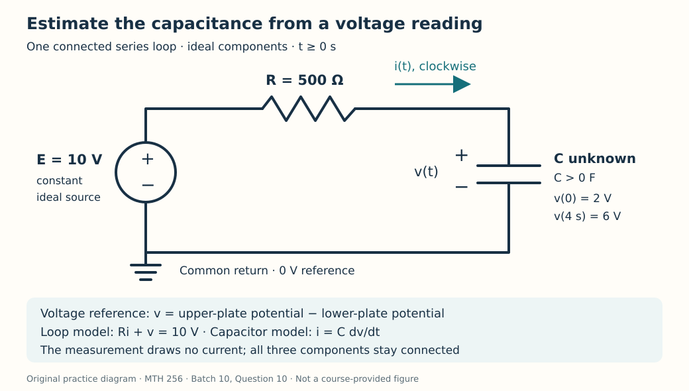

Course practice / Batch 10 / 2026-10-11 PDT
MTH 256
一阶微分方程
First-order differential equations · 解与初值验证、非自治方向场、分离变量、积分因子、冷却参数估计、取样前后的指数增长、逻辑斯蒂时间比较、变流量混合与 RC 电容参数估计
Matching the initial value is not enough
On the domain \(t>0\), consider \(y^{\prime}+y/t=2\), with y(1) = 4, and the candidates \(u(t)=t+3/t\) and \(w(t)=t+3\). Both t and y are dimensionless.
- Identify the independent variable, dependent variable, and order. Is the equation linear in y?
- Differentiate each candidate and test it in the differential equation for t > 0.
- Check the initial condition for each candidate. Which solves the IVP? Find the required slope at t = 1 directly from the equation, and compare it with both candidate derivatives there.
中文提示（不含解答）
方程检验与初值检验是两件事；两条曲线经过同一个点，不代表它们都遵循同一微分方程。
A curved row of horizontal slope segments
For \(y^{\prime}=t^2-y\), both t and y are dimensionless. Put t on the horizontal axis and y on the vertical axis.
- Calculate the slopes at all nine points with \(t\in\{-1,0,1\}\) and \(y\in\{0,1,2\}\), then sketch a short line segment at each point. Explain why the two outer columns match.
- Find the curve on which the slope is zero. State whether slopes are positive or negative above and below that curve.
- Does the zero-slope curve itself solve the differential equation? Check by differentiation. Are there any constant equilibrium solutions valid for every real t?
中文提示（不含解答）
零斜率位置可能随时间移动；验证一条曲线时，必须比较曲线自身的导数和方程给出的斜率。
A cubic relation from separation
Solve \(y^{\prime}=t/y^2\), y(0) = 2, for \(t\ge0\). Both variables are dimensionless, and the differential equation is defined only where \(y\ne0\). Use the real cube root.
- Separate variables, integrate, and use the initial value to obtain an explicit solution.
- Verify the differential equation and initial value. Find y(2) exactly and to three decimals.
- Find the first time y = 3, exactly and to three decimals. Explain why this is the only such time for t ≥ 0 and why the solution never reaches the excluded value y = 0.
中文提示（不含解答）
先将 y 的平方乘到左边；确定积分常数后，再取实数立方根。判断目标时刻是否唯一，可看 t > 0 时导数的符号。
A rational approach to a limiting level
For \(t\ge0\), solve \(y^{\prime}+3y/(t+1)=2/(t+1)\), y(0) = 2. Both variables are dimensionless.
- Find an integrating factor and write the resulting product-derivative equation. Solve the IVP.
- Verify the equation and initial value. Find the first time y = 1, exactly and to three decimals.
- Determine whether the response increases or decreases for t ≥ 0, and find its long-term limit. Is the limiting value attained at any finite time?
中文提示（不含解答）
积分因子是 t + 1 的幂；求出解后，将它写成“常数 + 随时间变化的项”，更容易判断极限和是否能达到极限。
Fit the strength of a fading input
A dimensionless response satisfies \(y^{\prime}+2y=a e^{-t}\), y(0) = 0, for \(t\ge0\), where the constant a > 0 is unknown. A second reading is \(y(\ln2)=3\); ln denotes the natural logarithm.
- Use an integrating factor to solve in terms of a, then use the second reading to determine a and the fitted solution.
- Verify the differential equation and both readings. Find the initial slope and \(y(\ln4)\) exactly.
- Find when the response is greatest and its greatest value. Use the sign of its derivative to justify the maximum, and find the long-term limit.
中文提示（不含解答）
先保留未知输入强度 a 完成积分，再代入第二个读数；寻找最大值时，要检查导数在临界时刻前后的符号。
Calibrate cooling from two later readings
A sample has been cooling in a room held at 16 °C since t = 0. Its temperature is 64 °C at t = 4 min and 40 °C at t = 10 min. Its starting temperature and constant cooling rate k > 0 are unknown. Assume \(T^{\prime}=-k(T-16)\), with k in min\(^{-1}\), T in °C, and t in minutes. Use this model for \(t\ge0\).
- Solve the model using the reading at t = 4 as a reference. Determine k and T(0), and give the fitted T(t). Report k to four decimals and T(0) to two decimals, retaining exact values for later work.
- Find the first time the sample reaches 19 °C, measured from t = 0.
- Find T(16). Compare the temperature drop over 4–10 min with the drop over 10–16 min. Explain the different drops using temperature excess above the room.
中文提示（不含解答）
先减去室温，再比较两个相隔六分钟的温差；题目要求的到达时刻从 t = 0 计时，而不是从第一次读数开始。
Sample removal resets a growth curve
A continuously modeled culture starts with 300 organisms and doubles every 4 hours. At t = 4 h, exactly 100 organisms are removed instantaneously for a sample. The remaining culture then grows with the same proportional growth constant as before. Assume no other removals and no carrying-capacity limit. Let P(t) be the remaining population; t is in hours. Apply \(P^{\prime}=rP\) between sampling events, not at the instantaneous jump. Use \(P(4^-)\) and \(P(4^+)\) for the counts immediately before and after removal.
- Determine r with units, and find P(t) for 0 ≤ t < 4. Calculate \(P(4^-)\) and \(P(4^+)\).
- Using elapsed time \(u=t-4\), solve the post-sampling IVP and then express P(t) in terms of t for t ≥ 4, taking P(4) to mean the post-removal value. Find P(8).
- Find the first time the remaining culture reaches 900 organisms, exactly and to three decimals in hours. Check whether this target could have been reached before the sample was removed.
中文提示（不含解答）
取样会使数量发生跳变，但不会自动改变比例增长常数；第二阶段的初值应是取样后留下的数量。
Equal population gains around the logistic midpoint
A culture follows \(N^{\prime}=0.16N(1-N/960)\), N(0) = 240 organisms. Time t is in days, 0.16 has units day\(^{-1}\), and the carrying capacity is 960 organisms. Treat N as continuous and use the model for \(t\ge0\).
- Find the nonnegative equilibrium populations. Solve the IVP by separation and state its long-term limit.
- Find the first times at which N = 480 and N = 720, exactly and to two decimals in days. Compare the elapsed times for the equal increases 240 → 480 and 480 → 720.
- Find the population at which the total growth rate is greatest, and calculate that rate with units. Explain why equal elapsed times in part 2 do not mean the growth rate is constant.
中文提示（不含解答）
先求每个目标对应的到达时刻，再相减比较持续时间；相同平均增长率不代表每一时刻的瞬时增长率都相同。
A rinse pump speeds up steadily
A tank initially contains 60 L of liquid with 3.0 kg of dissolved salt. Pure water enters at \(q(t)=3+t\) L/min when t is entered in minutes, and perfectly mixed liquid leaves at the same instantaneous volume flow rate. The constant term is 3 L/min and the coefficient of t is 1 L/min\(^2\). Use this pump schedule only for \(0\le t\le12\) min. Assume perfect mixing, no evaporation, and no other losses. Let S(t) be salt mass in kg and C(t) = S(t)/V(t) concentration in kg/L.
- Determine V(t). Write and solve the IVP for S(t), and give C(t).
- Find the first time the concentration reaches 0.010 kg/L, exactly and to three decimals in minutes. Check that it occurs within the stated pump schedule.
- Up to that time, calculate the total water admitted, in liters, and salt removed, in kilograms. Give exact values and decimals to three places, and check the overall salt balance.
中文提示（不含解答）
流量随时间变化时，累计进水量应对流量积分，不能用末时刻的流量直接乘总时间；出水带走盐，纯净进水不带入盐。
Find a capacitor from one voltage reading
The diagram shows one series loop containing an ideal constant 10 V source, a resistor R = 500 Ω, and a capacitor with unknown constant capacitance C > 0, in farads. For t ≥ 0 the loop remains connected. Capacitor voltage v(t), in volts, is the upper-plate potential minus the lower-plate potential. The initial voltage is v(0) = 2 V, and a non-loading measurement gives v(4) = 6 V. Current i(t), in amperes, is positive clockwise, into the upper plate. The source polarity gives \(Ri+v=10\). Use t in seconds and ideal components.
- Write the IVP for v(t) in terms of C and solve it. Use the reading at 4 s to find C and the time constant RC exactly; also give C to five decimals in farads and RC to three decimals in seconds. Verify both voltage readings using the fitted model.
- Find i(t). Give i(0), i(4), and its long-term limit in mA.
- Find the first time v = 9 V. Calculate the signed charge delivered into the upper plate from t = 0 to that time, exactly and to four decimals in coulombs.

中文提示（不含解答）
先观察电源电压与电容电压之差如何衰减，用读数确定时间常数；流入极板的总电荷等于电容电荷的变化。